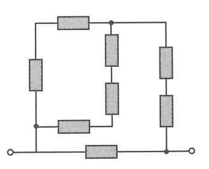
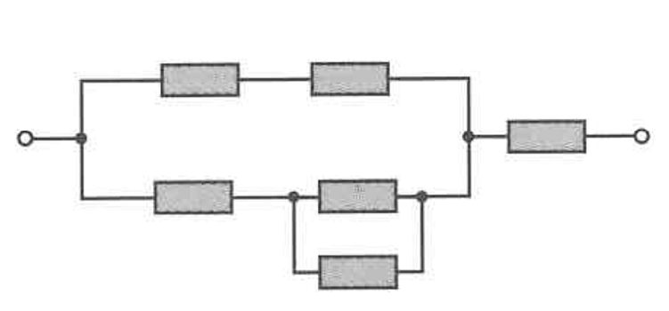
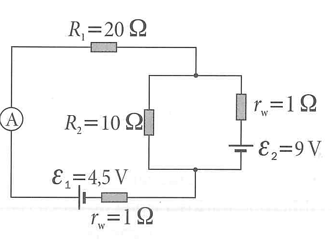
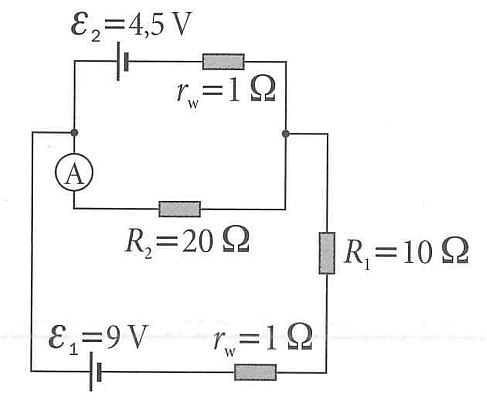

Sekcja 6: Obwody elektryczne
1. Obwód szeregowy i równoległy
Masz trzy oporniki: \(R_1=15\,\Omega\), \(R_2=30\,\Omega\) oraz \(R_3=50\,\Omega\) i baterię 12 V. Rozważ przypadek, gdy wszystkie są połączone szeregowo, oraz gdy wszystkie są połączone równolegle. Oblicz wypadkową (zastępczą) rezystancję w każdym przypadku. Oblicz prąd pobierany z baterii w każdym przypadku.
2. Oporniki
Dysponujesz dokładnie trzema opornikami \(1\,\Omega\). Jakie wszystkie możliwe rezystancje zastępcze można uzyskać, łącząc je w różny sposób? Wypisz wszystkie różne wartości.
3. Obwód mieszany
Oblicz rezystancję zastępczą dla obwodu pokazanego na rysunku. Wszystkie oporniki mają rezystancję \(5\ \Omega\).

4. Obwód mieszany
Oblicz rezystancję zastępczą dla obwodu pokazanego na rysunku. Wszystkie oporniki mają rezystancję \(10\ \Omega\).

5. Prawa Kirchhoffa
Stosując prawa Kirchhoffa, wyznacz prądy \(I_1\), \(I_2\), \(I_3\) (płynące odpowiednio przez oporniki \(R_1\), \(R_2\), \(R_3\)) w następującym obwodzie z dwoma oczkami:
- Lewe oczko: amperomierz \(A\), górny opornik \(R_1 = 20\,\Omega\) oraz dolne źródło \(\mathcal{E}_1 = 4.5\,\text{V}\) połączone szeregowo z oporem wewnętrznym \(r_w = 1\,\Omega\).
- Prawe oczko: źródło \(\mathcal{E}_2 = 9\,\text{V}\) połączone szeregowo z oporem wewnętrznym \(r_w = 1\,\Omega\).
- Gałąź wspólna: opornik \(R_2 = 10\,\Omega\) łączący węzeł górny prawy z węzłem dolnym.

6. Prawa Kirchhoffa ponownie
Oblicz prąd płynący przez amperomierz.

7. Kondensatory połączone równolegle
Dwa kondensatory, \(C_1=4\,\mu\text{F}\) oraz \(C_2=6\,\mu\text{F}\), są połączone równolegle do baterii 10 V. Jaki jest całkowity ładunek zgromadzony na kondensatorach? Jaka jest całkowita zmagazynowana energia?
8. Równanie napięcia w obwodzie AC
Prąd w obwodzie prądu przemiennego opisany jest równaniem \(I(t) = 2 \sin(120\pi t)\). Jeśli obwód składa się z pojedynczego opornika \(50\,\Omega\), jakie jest równanie napięcia \(V(t)\) na tym oporniku?
9. Prąd
Ładunek przepływający przez przewodnik dany jest funkcją czasu \(Q(t) = 5t^2+5\). Jaki jest prąd w chwili \(t=3\) s?
10. Prąd średni
Piorun przenosi ładunek 30 kulombów do ziemi w czasie 2 milisekund. Jaki jest średni prąd pioruna?
11. Moc i energia
Jaka jest moc wydzielana na oporniku \(100\,\Omega\), gdy przyłożone jest do niego napięcie 50 V? Ile energii zostanie zużyte w czasie 5 minut?
12. Prądy w transformatorze
Transformator ma uzwojenie pierwotne o 1000 zwojach i uzwojenie wtórne o 200 zwojach. Jeśli napięcie pierwotne wynosi \(120\text{ V}\) (AC), jakie jest napięcie wtórne? Jeśli prąd w uzwojeniu wtórnym wynosi \(3\text{ A}\), jaki jest prąd w uzwojeniu pierwotnym?
13. Przekładnia transformatora
Transformator służy do obniżenia napięcia z 120 V AC do 9.0 V AC. Jeśli uzwojenie pierwotne ma 400 zwojów, ile zwojów musi mieć uzwojenie wtórne?
14. Obwód RLC
Zapisz równanie różniczkowe dla szeregowego obwodu RLC ze źródłem napięcia \(V\), opornikiem \(R\), cewką \(L\) oraz kondensatorem \(C\). Przyjmij, że prąd jest równy \(I(t)\), a napięcie na kondensatorze wynosi \(V_C(t)\). Porównaj to z równaniem tłumionego oscylatora harmonicznego. Jakie są analogie między wyrazami w obu równaniach?
15. Sześcian z oporników*
Sześcian jest zbudowany z 12 identycznych oporników umieszczonych na jego krawędziach, z których każdy ma rezystancję \(R\). Jaka jest rezystancja zastępcza między dwoma przeciwległymi wierzchołkami sześcianu?